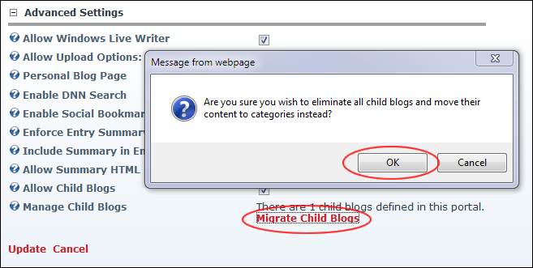

Migrating Child Blogs
How to manage child blogs from previous versions of DNN. Child blogs are succeeded by categories as of Blog module Version 4. You can migrate existing child blogs to categories here. Note: You can keep working with child blogs as before if you wish.
- Select Module Options from the View_Blog module actions menu.
- Go to the Advanced Settings section. The number of child blogs which currently exist in this site is listed at Manage Child Blogs.

- At Manage Child Blogs, click the Migrate Child Blogs link. This displays the message "Are you sure you wish to eliminate all child blogs and move their content to categories instead?"
- Click the OK button. Child blogs are now removed from the Blog_List module and listed in the Blog_Categories module. When adding a new blog entry, bloggers can select a category (E.g. what was previously a child blog) for the entry.
Tip: "Configuring Advanced Settings for the Blog Module" to disable child blogs to be created once you have migrated existing child blogs. This enables all future child blogs to be managed using categories.